Wir über uns
Leitbild
Kursangebot
Angebote für Geflüchtete
Kindergeburtstage
"Unsere Welt braucht eineTherapie", Gesprächsabend am 22. Juni
BGZ Sommerfest am 23. Juni
Tanztheater "Weltenspringer" für Kids, Aufführung am 25. Juni im Rieckhof
Ausstellungen
Literaturcafé im Striepensaal
AG Süderelbe-Archiv
Kulturtage Süderelbe 2017 - 03. Nov. bis 19. Nov.
Fortbildung zur Sprachförderkraft mit künstlerischen Mitteln
Puppentheater Kollin Kläff: Termine ab Oktober 2017
Kontakt / Impressum
Hier finden Sie uns
BGZ Süderelbe
Links
Archiv
PartyKunst - am 18. Mai im Haus der Jugend
Kulturhausfest am So 7.5.17
Matinee-Lesung über die Finnen und ihr Land von und mit E. Apffelstaedt am 07. Mai 17
TUULETAR, Vocal Folk Hop aus Finnland am 05. Mai 17
Südlesetage
Hase - ohne Igel?! Weihnachtsmärchen am 13. Dez.
Tonali Konzert am 12.11.16 um 18 Uhr
Dirk Janssen: Expedition zu den Devils Holes in Venezuela, Vortrag am 10. Nov.
Einmal China und zurück Ausstellung, Vernissage 7.11.16 19.30 Uhr
Cajon Bau&Spiel-Workshop am 06. Nov. 16
Johannes Kirchberg: HEUTE ZWISCHEN GESTERN UND MORGEN am 5. Nov.
Lesung Sofia + Leonid Tolstoi 2.11.16, 19 Uhr
Der kulturelle Rucksack
Vernissage und Lesung: "Geschichten aus fünf Jahrhunderten" am 21. Okt.
Christin Neddens' Oceanside Quartett am 28. Okt.
500 Jahre Neugraben
Historisches Sommerfest, Stadtteilfest am 25. Juni
Historische Rundgänge
"KulturPinsel": Ausstellung in der Bücherhalle Harburg
Theater Mär: "Die Königin der Farben" am 17. März
Abi Wallenstein & Bluesculture am 22. Jan. 16
Mittsommernachtstango - Musik u. Dokumentarfilm am 02. Nov.
Theater UniVerbal: DIE DA! am 31. Okt.
Tanztheater-Aktion "Games" für Kinder am 14. Juni
Tag der offenen Tür am 30.05.15
Blues Harp Workshop mit Steve Baker am 19. Okt. 14
Walking Actors: "Ein bunter Strauß voll Leben" am 8. Nov.
KulturDialog am 13.05.14
Branimir Georgiev - Bilder aus Hamburg Süd - Vernissage am 5. Sept.
Eröffnung BGZ Süderelbe am 29. Febr. 12
Mosaikwand
Ferienprogramm für Kinder
Theatergruppe im Aufbau
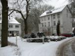
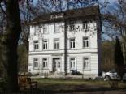
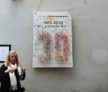
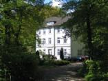
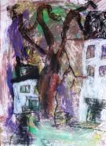
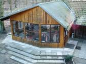
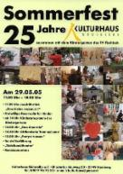
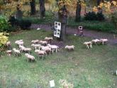
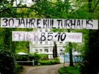
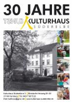
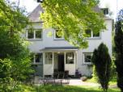
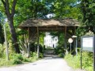
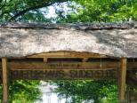
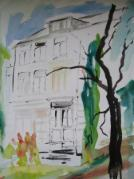
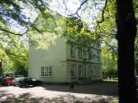
Kulturhaus Süderelbe e.V. am Ehestorfer Heuweg 1980-2011